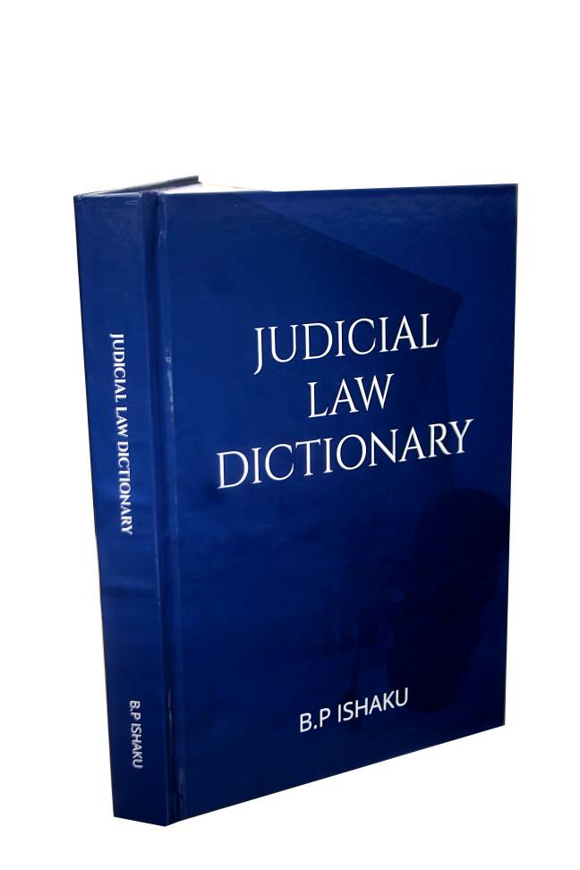

Judicial Law Dictionary
Judicial Law Dictionary is a law dictionary containing elaborate judicial and statutory definitions covering both the Common Law and Customary Laws in Nigeria. These definitions are illustarted by over 4000 decided cases and makes references to over 1000 statutes. It is very apt for any person who is desirous of understanding legal meanings of terms, phrases and words the courts rely in deciding cases.